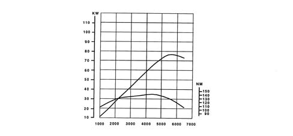
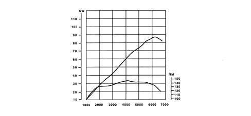
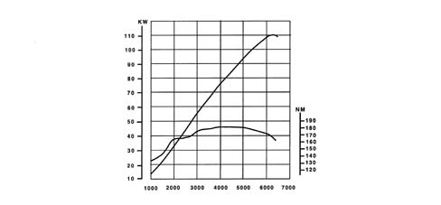
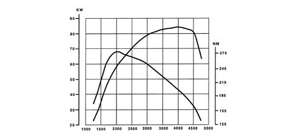

Requirements
- Path
- Technical Data > Project description and specifications > ENGINE TYPICAL CURVES > Requirements
- Kind
- technical data / specifications
- Applies to
- all engines; all production periods
- Interactive page
- https://sloeber94.github.io/elrnDB-a147/en/#/3022871
Applies to: all engines; all production periods
The power and torque curves illustrated can be obtained with the engine overhauled and run in (50 hours' operation), without fan, with an exhaust silencer and air filter fitted, at sea level.
1.6 T. SPARK (105 CV)

1.6 T. SPARK (120 cv)

2.0 T. SPARK

1.9 JTD
